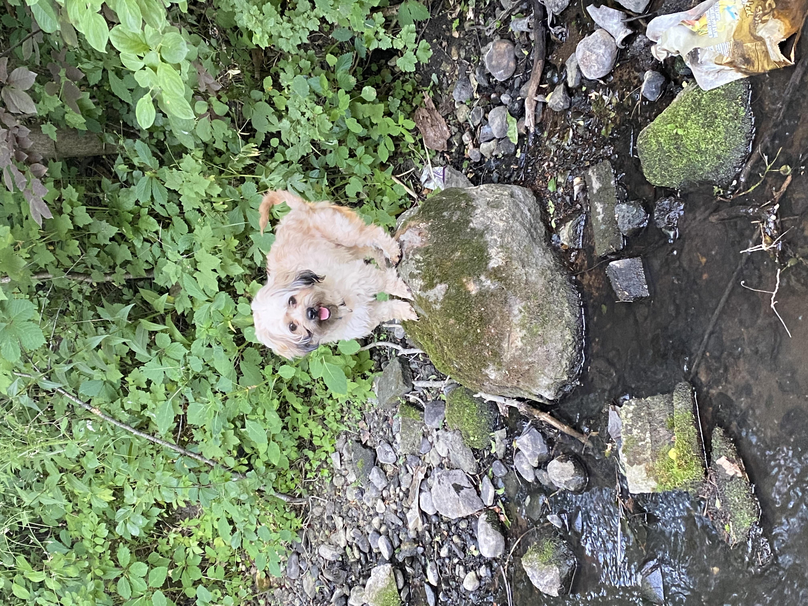

Home

About Me
Hi everyone! My name is Josy Rojas, and I'm excited to be part of Web-105. I'm 18 years old and I live in Harvard, Illinois. At home, I live with my parents, three younger siblings, and our playful dog who loves hugs. I am enrolled in my school's dual degree program, which means I'm a high school senior taking college classes in the morning and then high school classes in the second half of the school day.
My Dog
As mentioned earlier, I have a playful four-year-old dog. When we adopted him two years ago, his previous owners named him Willy, so we decided to keep that name. He's quite the playful pup – he loves bringing his toys to us and insisting on playtime. He also loves getting attention, often nudging us for hugs and head scratches. He's quite the attention seeker, always finding a way to get some love and affection!
Plans After MCC
Currently, I'm in my final semester at McHenry County College, working towards my Associate of Science degree. After this, I'm considering transferring to either The Pennsylvania State University or The University of Washington Seattle. I'm really interested in majoring in Math or Computer Science, maybe even both!
Hobbies And Interests
When I'm not studying, I enjoy watching sitcoms and reading thrilling books. On weekends, and sometimes during the week, I love hanging out with my friends. My group of friends has made these last years of high school so much better. We're all part of the dual degree program and often carpool to and from MCC together.